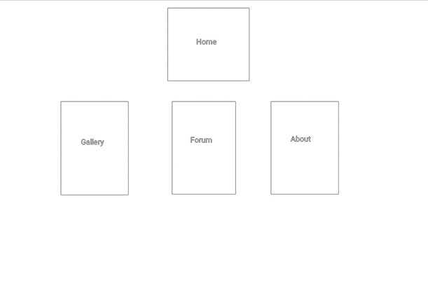

Sede wireless 2.0 nasce come una posto per i tanti che, per studio o lavoro, di case e città ne hanno cambiate tante.
Qui non c'è nessun "fuori", è una casa che accoglie tutti, senza affitti!
Come le foto appese sul letto, guarda gli angoli dei nostri paesini e faccene conoscere altri:
invia le tue foto nella nostra chat, dove quanti, come te, cercano da lontano nuovi amici e un po' di cibo da giù!
Rivivi la quotidianità a suon di risate, con gli articoli sui momenti clou della vita di un fuorisede:
- l'arrivo del pacco da giù,
- la prima partenza con la scoperta dei coinquilini e dell'indipendenza, forse..
Scopri e suggerisci il prossimo titolo, ogni settimana sul Blog Per questo e molto altro, c'è Sede Wireless 2.0: Sentiti a casa e, amunì, cominciamo!
Che lo dico a fare? Clelia, siciliana, fuorisede a Bologna, che da un esame universitario ha tirato fuori quest'idea!
Negli anni le disavventure non sono mancante, come gli spinni e la voglia di crescere..
La lontananza da casa è qualcosa che molti, sopratutto se provenienti dal sud italia, ma non solo, prima o poi devono vivere;
quindi, perchè non parlarne?
Cosi è nata quest'idea, per farci sentire tutti unici ma con qualcosa in comune.
Uno schema di partenza, può aiutare nel trovare quel che cerchi!
